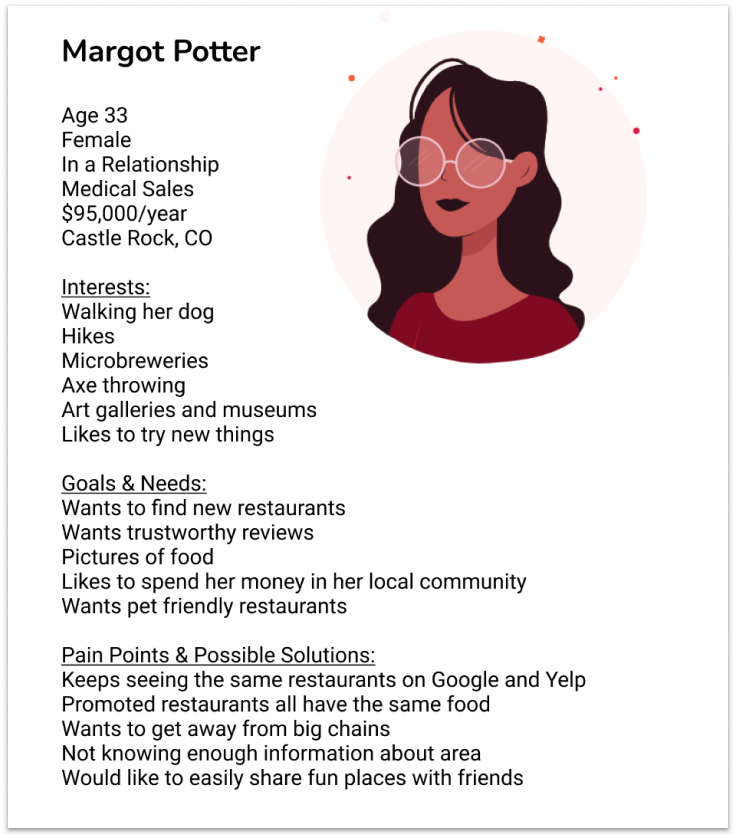
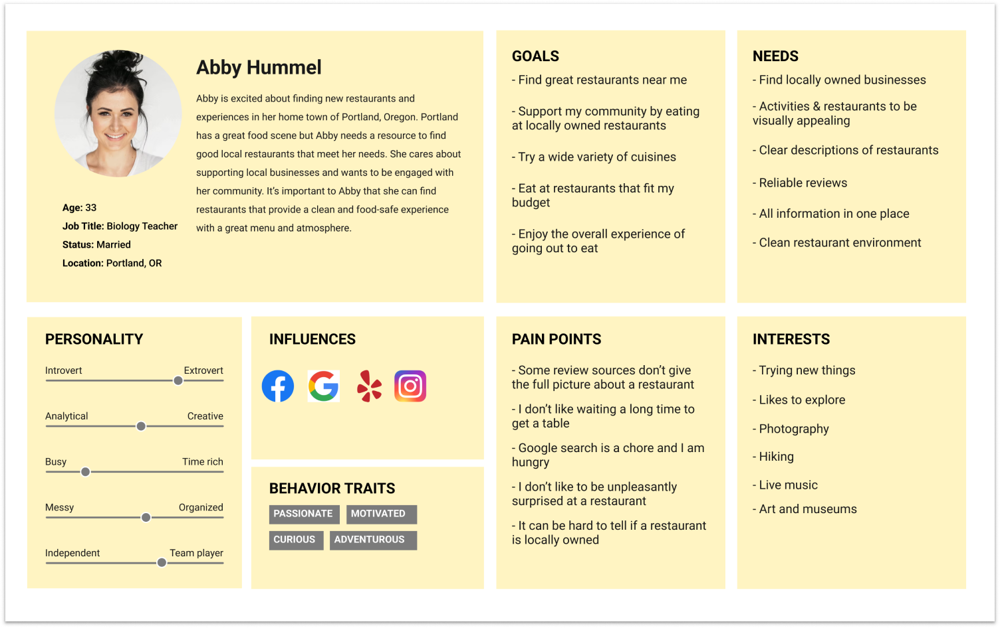
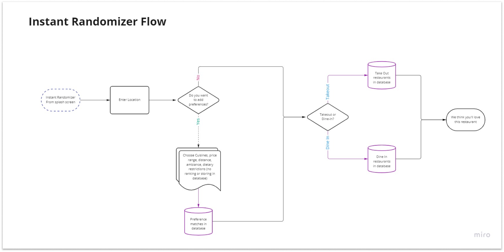
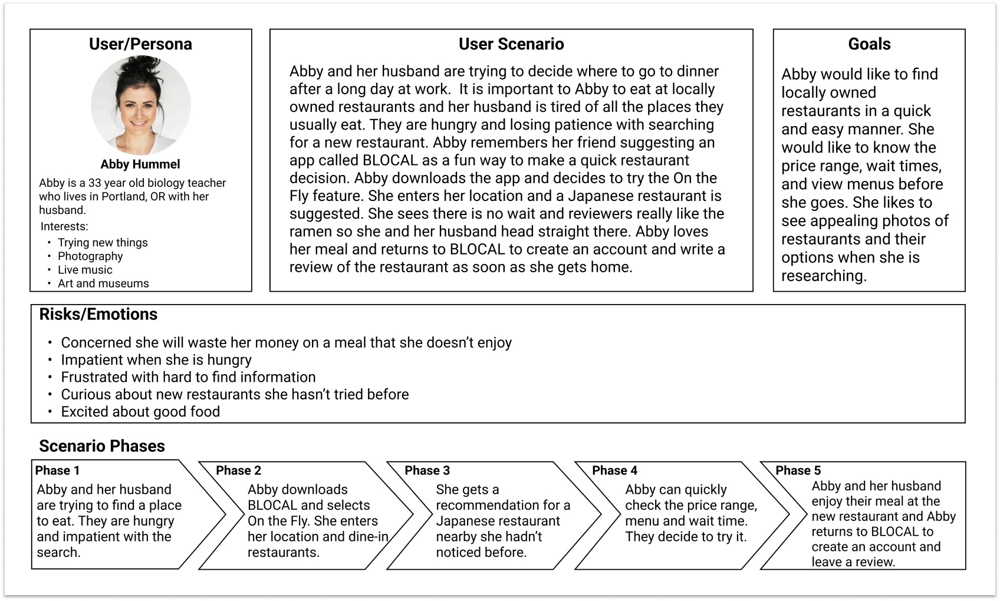
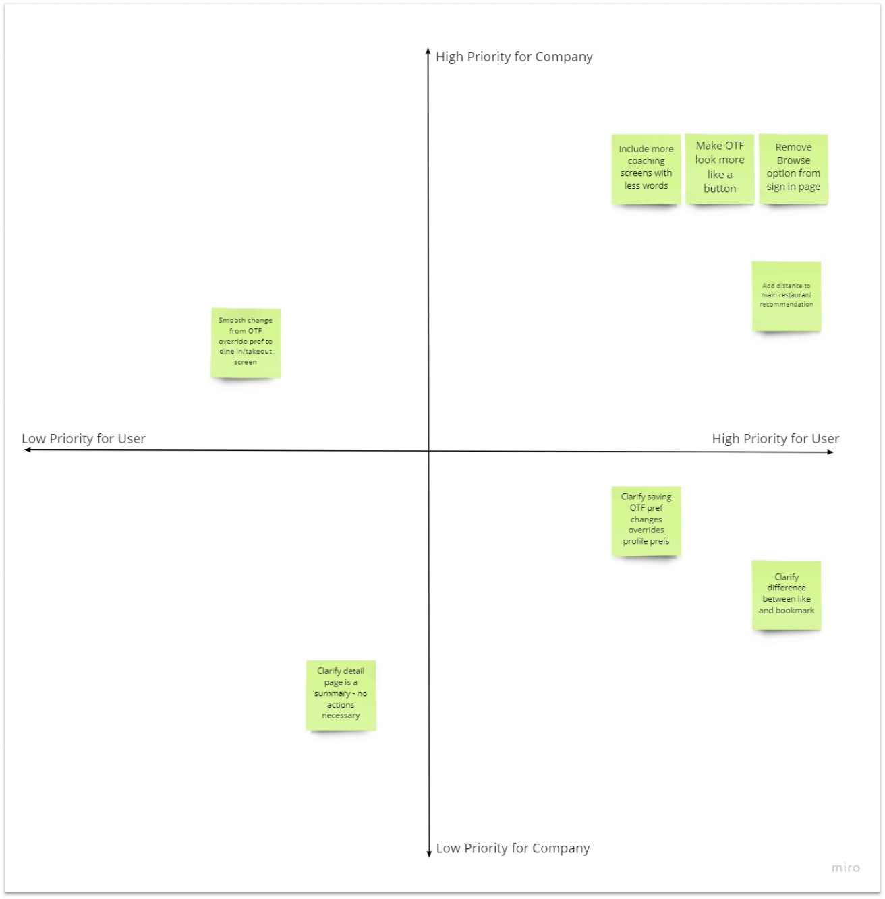

UX Designer
Hannah Bland, Alex Polen
3 weeks
Mid fidelity, clickable prototype
The word “hangry” has become widespread across popular culture in the last few years. It efficiently captures the feeling of being irrationally angry when you allow yourself to get too hungry. When you feel this way, it becomes clear that finding a restaurant can be a real pain.
Information about restaurants in your area is scattered across multiple platforms, making it hard to find quickly. This is especially true if you find it important to frequent locally owned restaurants. The available platforms are often overwhelming to navigate and are not visually appealing. Frustration with the process is almost certain.
BLOCAL is an app that allows users to find information about locally owned restaurants quickly in one easy-to-use app. BLOCAL also offers users the On the Fly feature which will give an instant restaurant suggestion. Users have the option to use On the Fly without an account, or to create an account and save their preferences to make their On the Fly suggestions more personalized. Creating an account also allows users to save their favorite restaurants and write reviews.
We began the research process with a proto-persona - Margot Potter, age 33 from Castle Rock, CO. Our hypothesis about her goals and pain points include liking to spend her money locally, wanting trustworthy reviews, and wanting to avoid large chain restaurants. The information gained in the process of developing the proto-persona helped us develop an interview plan and survey questions.
We conducted five semi-structured interviews with a 20 minute time limit. All interviews were conducted over Zoom.
We created a list of questions to help us answer these objectives. Questions covered how the interviewee finds restaurants and how much time they spend to do so, what hesitations they have before trying somewhere new, and their satisfaction with recent experiences among other things.
During interviews we found all five subjects used multiple platforms for researching restaurants and had a strong preference for good photos. They also had limited patience for the research, especially when hungry.
We also conducted a survey to help us get data from a wider group of people. We used Google Forms to create a 10 question, multiple choice answer survey. The survey was posted on social media by all team members.
We received 187 responses. The results indicate that most respondents do find it important to choose locally owned restaurants. However, we were surprised to find that most people did not consider it hard to go outside their comfort zone when looking for restaurants.
We considered five companies when researching competitors: Tripadvisor, OpenTable, Yelp, DoorDash, and Google Maps. DoorDash and Google Maps are indirect competitors - DoorDash because their focus is food delivery and Google Maps because navigation is their primary function. However, both of these apps provide users with information about restaurants in their area.
| Trip Advisor | Tripadvisor offers user reviews of restaurants searchable by location. They are well known with a large review database. We feel their search features are robust, but the site can be hard to wade through and the accuracy of reviews is unclear. |
| OpenTable | OpenTable has a clean, minimalist design and is very easy for the user to navigate. Users can see open reservations at a restaurant quickly without an account. |
| Yelp | Yelp has a search system that does not require keywords - users can simply pinch to zoom on a map. The app is appealing and easy to use. However, there is a question if the reviews on Yelp are reliable - it is very easy for companies to purchase fake positive Yelp reviews. |
| DoorDash | DoorDash offers delivery or takeout at a wide variety of restaurants with credible reviews. The final price can be surprising to the user and some restaurants mark up their doordash prices over their in house prices. The site is overwhelming, but the colors are pleasant. |
| Google Maps | Google Maps offers restaurant search via map. There is a lot of information about the restaurants available - wait times, reviews, photos, menus, and other details. However, a lot of the pertinent information is buried and hard to find. We also once were able to click a filter while searching for romantic ambiance, but haven't been able to find that feature again. |
Data from interviews was used to create an Affinity Diagram with Point of View Statements.
We then developed a User Persona. Abby Hummel is a 33 year old biology teacher living in Portland, OR with her husband. She finds it hard to tell if restaurants are locally owned and likes to see photos when she is doing her research.
From this data we developed the following Problem Statement: We observed when users are hungry they make impromptu decisions because information on current apps is cluttered and overwhelming. How might we streamline search information into a simple and visually appealing layout so restaurant goers successfully choose a restaurant and return to the app to leave a review?
As a group, we brainstormed features for BLOCAL to best meet the user's needs. We started with the “I Like, I Wish, What if?” method and then took the best ideas and sorted them on a prioritization matrix. One idea was to create a random restaurant generator. We called this feature “On the Fly”.
Next, we created several user flows in Miro - onboarding, new user preferences, account holder On the Fly, non-account holder On the Fly, and a search and review flow. Once we developed these flows, we decided to focus on the preferences and two On the Fly flows to best meet the user's need for quick recommendations. Below is the On the Fly flow for a user with no account.
This section of the user flow assumes the user has chosen not to make an account. Items in purple represent backend database functions that the user will not see.
We developed a scenario for our User Persona. We looked at how the user may be feeling at each step of the process of using BLOCAL. We then created a storyboard to illustrate the experience.
Each member of the team developed their own sketches of wireframes for the app. As mentioned above, we focused on the two On the Fly flows and setting user preferences. Examples of my sketches are below.
We tested our individual prototypes to determine what options worked best for the users. The testing plan included three tasks - use On the Fly without an account, use On the Fly with an account, and set user preferences as a new user.
We found that our coaching was not working. Users did not understand what the On the Fly feature does and often got confused with the Browse option on the starting screen. Users also did not understand the difference between the like and bookmark features.
We adjusted by adding two extra coaching screens, but shortening the information on each. We created an On the Fly icon that carries throughout the app to make it more recognizable. Also, we removed the Browse and bookmark features as these seemed to only confuse users.
We combined our wireframes and the results of our testing to create a final mid-fidelity prototype. We used Material Design 2.0 to add toolbars and buttons.
I learned a lot from this project. We initially hypothesized that people have a hard time going out of their comfort zone and trying new restaurants. Our interviews and the survey showed this wasn't generally the case. The real issue was finding reliable information on restaurants quickly.
It was also a challenge to narrow our scope. With only three weeks for the entire project, we had to be very specific about what we wanted to work on. We originally hoped to add other locally owned businesses - bars, clubs, activities, etc. but we didn't have the time. If we were to continue this project, we would have liked to add a “plan your night” type of feature where the user could put in an area and distance they'd like to travel and they'd get a plan for their evening with restaurants and activities.